<!DOCTYPE html>
<html>
  <head>
    <title>HumanEval</title>
    <script src="jspsych/jspsych.js"></script>
    <script src="jspsych/plugin-instructions.js"></script>
    <script src="jspsych/plugin-html-keyboard-response.js"></script>
    <script src="jspsych/plugin-preload.js"></script>
    <script src="jspsych/plugin-fullscreen.js"></script>
    <script src="jspsych/plugin-html-keyboard-response.js"></script>
    <script src="jspsych/plugin-html-button-response.js"></script>
    <script src="jspsych/plugin-survey.js"></script>
    <script src="jspsych/plugin-canvas-button-response.js"></script>
    <script src="jspsych/plugin-multiple_slider.js"></script>
    <script src="jspsych/plugin-external-html.js"></script>
    <script src="jspsych/plugin-survey-html-form.js"></script>
    <script src="jspsych/plugin-survey-text.js"></script>
    <script src="jspsych/saveData_function.js"></script>
    <script src="stimuli/catchTrialData.js"></script>
    <script src="stimuli/training_trials/training_trials.js"></script>
    <link href="jspsych/jspsych.css" rel="stylesheet" type="text/css" />
    <link rel="stylesheet" href="https://unpkg.com/@jspsych/plugin-survey@0.2.2/css/survey.css">
  </head>
  <body></body>
  <script>

async function main () {

    var jsPsych = initJsPsych({
    minimum_valid_rt: 1000,
    // Here I am defining that participants are redirected to Prolific at the very end of the study.
    on_finish: function(){
    window.location.href = "https://app.prolific.com/submissions/complete?cc=CPBP56NU"
  }
});

/** All IDs will show as undefined if only using the link, without the ?VARS at the end */

  var prolific_id = jsPsych.data.getURLVariable('PROLIFIC_PID');
  var study_id = jsPsych.data.getURLVariable('STUDY_ID');
  var session_id = jsPsych.data.getURLVariable('SESSION_ID');

  // Global variable to hold consent status
  var participantConsentStatus = null;

  var check_consent = function(elem) {
            if (!document.getElementById('read_consent').checked) {
                alert("Please indicate that you have read the consent form.");
                return false;
            }
            if (!document.getElementById('consent_checkbox').checked && !document.getElementById('no_consent_checkbox').checked) {
                alert("Please indicate whether you consent to participate or not.");
                return false;
            }
            if (document.getElementById('no_consent_checkbox').checked) {
                participantConsentStatus = "Participant does not consent and is redirected";
                
                // Redirect to Prolific or any other action for non-consenting participants
                window.location.href = "https://app.prolific.com/submissions/complete?cc=CLH2EZGR";
                return false;
            }
            participantConsentStatus = "Participant has read consent form and consents to study participation.";
            return true;
        };

    var consent = {
    type: jsPsychExternalHtml,
    url: 'stimuli/consent_form/EXTERNAL_CONSENT_PAGE.HTML',
    cont_btn: 'continue_button',
    check_fn: check_consent,
    on_finish: function() {
        // Log consent status
        jsPsych.data.get().last(1).addToAll({
            consent_status: participantConsentStatus,
            consent_button_press1: "I have read the above consent form",
            consent_button_press2: "I consent"
        });
        
      }
    };

  // I am defining the images used for instructions here to be able to preload them below
  var instru_images = [
    'stimuli/instructions/watch03b.jpg',
    'stimuli/instructions/watch04.jpg',
    'stimuli/instructions/1014.jpg',
    'stimuli/instructions/2009.jpg',
    'stimuli/instructions/tree.jpg',
    'stimuli/instructions/1009.jpg',
    'stimuli/instructions/shoppingcart.jpg',
    'stimuli/instructions/scissors02a.jpg',
    'stimuli/instructions/watercooler.png',
    'stimuli/instructions/instru_7.jpeg',
    'stimuli/instructions/instru_10.png',
    'stimuli/instructions/instru_8.png',
    'stimuli/instructions/instru_9.png',
       
    ]
   // I am defining the images used for the catch_trials here to be able to preload them below
    var catch_trial_images = [
      'stimuli/catch_trials/n07880968_12913.JPEG', 'stimuli/catch_trials/n07880968_1977.JPEG','stimuli/catch_trials/n09256479_12700.JPEG','stimuli/catch_trials/n02096437_9519.JPEG','stimuli/catch_trials/n02096437_7198.JPEG','stimuli/catch_trials/n12144580_13087.JPEG',
      'stimuli/catch_trials/n01530575_5491.JPEG','stimuli/catch_trials/n01530575_8851.JPEG','stimuli/catch_trials/n07695742_2104.JPEG','stimuli/catch_trials/n02497673_3659.JPEG','stimuli/catch_trials/n02497673_4787.JPEG','stimuli/catch_trials/n07583066_7728.JPEG',
      'stimuli/catch_trials/n03854065_70095.JPEG','stimuli/catch_trials/n03854065_48072.JPEG','stimuli/catch_trials/n01514668_5624.JPEG','stimuli/catch_trials/n01514668_15917.JPEG','stimuli/catch_trials/n02871525_4866.JPEG',
      'stimuli/catch_trials/n02116738_8750.JPEG','stimuli/catch_trials/n02116738_3684.JPEG','stimuli/catch_trials/n04254680_5432.JPEG','stimuli/catch_trials/n04008634_25101.JPEG','stimuli/catch_trials/n04008634_23160.JPEG',
      'stimuli/catch_trials/n01872401_1260.JPEG','stimuli/catch_trials/n01872401_7014.JPEG','stimuli/catch_trials/n04147183_21405.JPEG','stimuli/catch_trials/n01748264_1951.JPEG','stimuli/catch_trials/n01748264_12351.JPEG','stimuli/catch_trials/n03272562_19421.JPEG',
      'stimuli/catch_trials/n07873807_17549.JPEG','stimuli/catch_trials/n07873807_17601.JPEG','stimuli/catch_trials/n03902125_9513.JPEG','stimuli/catch_trials/n12768682_47297.JPEG','stimuli/catch_trials/n12768682_12148.JPEG','stimuli/catch_trials/n02930766_36646.JPEG',
      'stimuli/catch_trials/n03854065_4593.JPEG','stimuli/catch_trials/n03854065_9731.JPEG','stimuli/catch_trials/n02114367_18628.JPEG','stimuli/catch_trials/n04252077_587.JPEG','stimuli/catch_trials/n04252077_2864.JPEG','stimuli/catch_trials/n07583066_2125.JPEG',
      'stimuli/catch_trials/n02113712_1478.JPEG','stimuli/catch_trials/n02113712_3371.JPEG','stimuli/catch_trials/n04116512_24061.JPEG','stimuli/catch_trials/n07718747_11680.JPEG','stimuli/catch_trials/n07718747_3104.JPEG','stimuli/catch_trials/n04120489_346.JPEG',
      'stimuli/catch_trials/n02951585_2807.JPEG','stimuli/catch_trials/n02951585_25853.JPEG','stimuli/catch_trials/n02490219_7274.JPEG','stimuli/catch_trials/n03967562_4439.JPEG','stimuli/catch_trials/n03967562_5884.JPEG','stimuli/catch_trials/n02699494_93.JPEG',
      'stimuli/catch_trials/n07880968_499.JPEG','stimuli/catch_trials/n07880968_5568.JPEG','stimuli/catch_trials/n03110669_14719.JPEG','stimuli/catch_trials/n02417914_5905.JPEG','stimuli/catch_trials/n02417914_21384.JPEG','stimuli/catch_trials/n04522168_2875.JPEG',
      'stimuli/catch_trials/n02127052_7289.JPEG','stimuli/catch_trials/n02127052_1851.JPEG','stimuli/catch_trials/n01930112_25613.JPEG','stimuli/catch_trials/n02114712_11299.JPEG','stimuli/catch_trials/n02114712_18694.JPEG','stimuli/catch_trials/n04584207_9604.JPEG',
      'stimuli/catch_trials/n02007558_16242.JPEG','stimuli/catch_trials/n02007558_396.JPEG','stimuli/catch_trials/n03272010_6329.JPEG','stimuli/catch_trials/n04335435_3878.JPEG','stimuli/catch_trials/n04335435_4974.JPEG','stimuli/catch_trials/n02483362_9281.JPEG',
      'stimuli/catch_trials/n01491361_154.JPEG','stimuli/catch_trials/n01491361_3876.JPEG','stimuli/catch_trials/n04505470_1187.JPEG','stimuli/catch_trials/n01498041_4310.JPEG','stimuli/catch_trials/n01498041_13180.JPEG','stimuli/catch_trials/n04404412_16615.JPEG',
      'stimuli/catch_trials/n03980874_10118.JPEG','stimuli/catch_trials/n03980874_11595.JPEG','stimuli/catch_trials/n01734418_9101.JPEG','stimuli/catch_trials/n01978287_556.JPEG','stimuli/catch_trials/n01978287_3322.JPEG','stimuli/catch_trials/n04347754_75117.JPEG',
      'stimuli/catch_trials/n02066245_17319.JPEG','stimuli/catch_trials/n02066245_7163.JPEG','stimuli/catch_trials/n03942813_4321.JPEG','stimuli/catch_trials/n07693725_3991.JPEG','stimuli/catch_trials/n07693725_6992.JPEG','stimuli/catch_trials/n04487081_1886.JPEG',
      'stimuli/catch_trials/n02319095_507.JPEG','stimuli/catch_trials/n02319095_397.JPEG','stimuli/catch_trials/n03777754_12184.JPEG',
      'stimuli/catch_trials/n07613480_20915.JPEG','stimuli/catch_trials/n07613480_8893.JPEG','stimuli/catch_trials/n03733281_3706.JPEG','stimuli/catch_trials/n02107574_4227.JPEG','stimuli/catch_trials/n02107574_3448.JPEG',
      'stimuli/catch_trials/n03721384_16491.JPEG','stimuli/catch_trials/n01756291_1180.JPEG','stimuli/catch_trials/n03450230_708.JPEG',

    ]
   // Also preloading the training images below to enable the experiment running smoothly
    var training_trials_images = [
      "stimuli/training_trials/n02966687_5607.JPEG","stimuli/catch_trials/n12144580_13087.JPEG","stimuli/training_trials/n02966193_46333.JPEG","stimuli/training_trials/n02877765_7633.JPEG","stimuli/training_trials/n02877765_5557.JPEG","stimuli/training_trials/n02877765_2389.JPEG","stimuli/training_trials/n02782093_42647.JPEG",
      "stimuli/training_trials/n02782093_5972.JPEG","stimuli/training_trials/n02782093_3126.JPEG","stimuli/training_trials/n01910747_844.JPEG","stimuli/training_trials/n01910747_981.JPEG","stimuli/training_trials/n01950731_154.JPEG","stimuli/training_trials/n01882714_10816.JPEG","stimuli/training_trials/n01871265_664.JPEG","stimuli/training_trials/n01882714_7222.JPEG","stimuli/training_trials/n01443537_22563.JPEG",
      "stimuli/training_trials/n01693334_9180.JPEG","stimuli/training_trials/n01828970_4179.JPEG"
    ]

  
   // Fetch experiment data for trials (each participants receives a customize set of trials and images)
    var response = await fetch("https://967-humaneval-164.exp.amd.mpib.org/api/inputs/by-group/ids");
    var input = await response.json();

    // Flatten the array and construct image paths
    var participant_images = input.flatMap(entry => [
        entry.image1,
        entry.image2,
        entry.image3
    ]);

    // Fetch the participant ID from the first entry's 'id' property
    var subject_id = input.length > 0 ? input[0].id : null;

  // Here I am preloading all the image files I need to run the experiment, so that the experiment runs smoothly even when internet
  // connection gets unstable
  var preload = {
        type: jsPsychPreload,
        auto_preload: true,
        images: [instru_images,participant_images,catch_trial_images,training_trials_images].flat(),
        show_progress_bar: true,
        message: '<span style="font-size: 30px;"><br>Please wait while the experiment files load.</span>'
  };

  // Maiks preload function
  //const cache = await preloadImages([instru_images,participant_images,catch_trial_images,training_trials_images].flat(), 20)
   
  // After preload I want to introduce a possibility to end the experiment early and still save data
  document.addEventListener('keydown', async function(event) {
    if (event.key === 'Escape') {
        // Wrap the code in an async IIFE (Immediately Invoked Function Expression)
        (async () => {
            // Assuming saveData is your function to save the experiment data
            await saveData(jsPsych.data.get().values());
            // This gives participants the chance to read the end screen before they get redirected.
            await redirectAfterDelay(10, "https://app.prolific.com/submissions/complete?cc=C717VYQC");
        })();
    }
});


    // I am initializing the timeline where my experiment structure will be accomodated
    var timeline = [];

    // I am adding meta data about the participant, and exp. indo to the globald jsPsych data construct
    jsPsych.data.addProperties({
      start : (new Date).toISOString().replace(/z|t/gi,' ').trim(),
      subject_id: subject_id,
      study_id: study_id,
      OS : window.navigator.platform,
      prolific_id : prolific_id,
      session_id: session_id,
      fullscreen_enter: true
    });

    //In the following I am making sure that participants enter full screen
    var enter_fullscreen = {
        type: jsPsychFullscreen,
        fullscreen_mode: true,
        message: '<p style="font-size: x-large; color:#4682B4;"><strong>Welcome to this experiment!</strong></p><br>'+ 
            '<br>'+
            '<p>To maximise the quality of the results, we ask you to remain in fullscreen mode for the duration of the experiment.</p>'+
            '<p>If you do exit fullscreen mode during the experiment, you will be redirected to Prolific and the experiment will terminate.</p>' + 
            '<p>Once the experiment is over, you will automatically be redirected to Prolific, so please don\'t close the experiment until this happens.</p>'+
            '<br>'+
            '<p>To enter fullscreen mode and <span>continue</span>, please click <span style="font-style: italic;">Continue</span>.</p>',


        on_start: function() {
            should_be_in_fullscreen = true, // once this trial starts, the participant should be in fullscreen
            // Ones participants reach this routine they have to have approved the consent form, otherwise they would have been redirected to prolific.
            consent_given = true;
        }
    }
    
    
    var demographics = {
      type: jsPsychSurvey,
      pages: [
        [
        {
        type: 'html',
        prompt: 'Please fill in the following two questions before we start with the instructions to our task:',
        },
        {
        type: 'multi-choice',
        prompt: 'Which gender do you identify with?',
        options: ['Diverse', 'Female','Male','I prefer not to say'],
        name: 'Gender',
        required: true
        },
        {
            type: 'text',
              prompt: function() {
              return `How old are you?`;
            },
            name: 'Age',
            required: true
            }
        ]
      ],
      // Add data at the whole-trial level here
      button_label_finish: 'Continue'               
    };
    

   // In the following I am defining the instrcution routines that walk the participant through a set of interactive instructions
   // I am splittig the instruction routines to be able to accomodate the interactivity (only reason for split)


    var instructions1 = {
     type: jsPsychInstructions,
     pages: [
    // General information
    '<p style="font-size: x-large; color:#4682B4;"><strong>Instructions</strong></p><br>In the following, we will explain how the task works.'+
    '<p>To continue with the instructions, please press click next.<br><br>The "next" button will always be enabled after a few seconds.</p>',
    '<p>During this experiment, we will ask you to make very easy decisions about everyday objects.</p>' +
    '<p>The following instructions will explain in detail how the task works and give some examples.</p>' +
    '<p>You can navigate back and forth through the instructions using the arrow keys on your keyboard.</p>',
    // Specific information
    '<p>In each trial of our task, you will see three object images presented side by side in your browser window. These images show different things.</p>' +
    '<p><strong>Your task is to pick one image that is least similar to the other two.</strong></p>' +
    '<p>If you do not recognize what is shown to you in one of the images, simply base your judgement on your best guess at what the image might show.<br><br><br><br></p>'
    ],
      show_clickable_nav: true,
      post_trial_gap: 200,
      min_viewing_time: 3000,  // Set the minimum viewing time to 5 seconds (in milliseconds)
      };

    var instructions2 = {
    type: jsPsychInstructions,
    pages: [
        // First page with the first set of interactive images
        '<p>In this first example triplet, the choice should be quite clear, as you see that the toucan stands out from the two images of a watch.</p>' +
        '<p>You can use your mouse to hover over each image and explore the differences between these images further.</p>' +
        '<div style="margin-bottom: 20px;"></div>' + 
        '<div style="text-align: center; position: relative;">' +
          '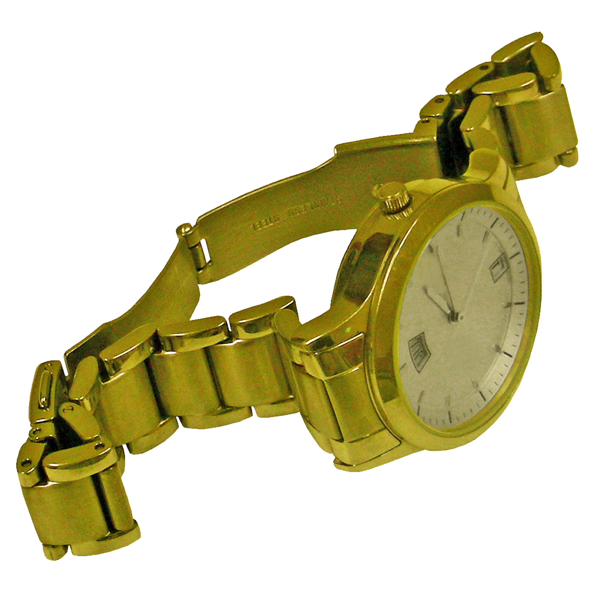' +
            '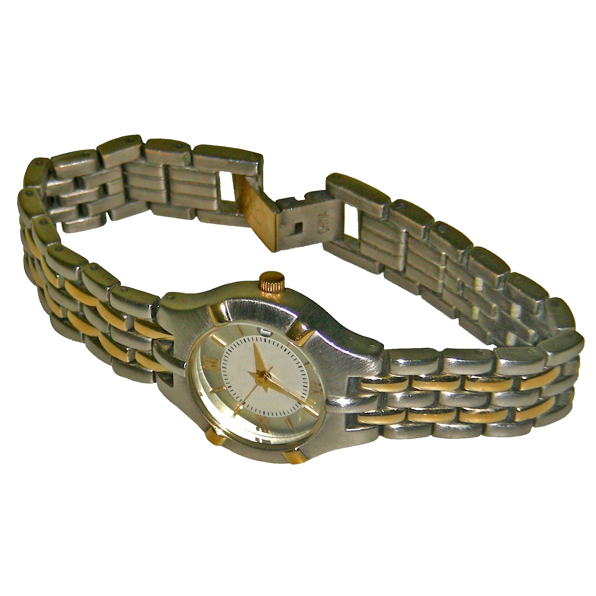' +
            '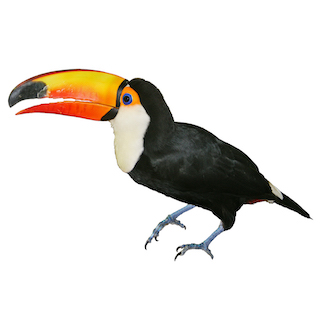' +
            '<div id="speech-bubble-1" class="speech-bubble" style="display: none; position: absolute; bottom: 100%; left: 30%; transform: translateX(-50%); background-color: lightblue; color: black; border: 2px solid black; padding: 8px; border-radius: 10px; font-size: 14px;">We see two watches, which clearly belong to the same category of objects.</div>' +
            '<div id="speech-bubble-2" class="speech-bubble" style="display: none; position: absolute; bottom: 100%; left: 50%; transform: translateX(-50%); background-color: lightgreen; color: black; border: 2px solid black; padding: 8px; border-radius: 10px; font-size: 14px;">Both watches also share a similar color and are photographed from a comparable angle.</div>' +
            '<div id="speech-bubble-3" class="speech-bubble" style="display: none; position: absolute; bottom: 100%; left: 70%; transform: translateX(-50%); background-color: yellow; color: black; border: 2px solid black; padding: 8px; border-radius: 10px; font-size: 14px;">The toucan, on the other hand, differs from the watches; it is, for example, an animal and possesses a different color scheme.</div>' +
        '</div>'+
        '<p style="color:#778899 ;">Which image is the odd-one-out?</p>',
    ],
    show_clickable_nav: true,
    post_trial_gap: 200,
    min_viewing_time: 3000,
    // Add a conditional function to check if we need to go back
    on_start: function(trial) {
        if (jsPsych.data.get().last(1).values()[0].button_pressed === 0) {
            jsPsych.endCurrentTimeline();
            jsPsych.timelineVariable('previousRoutine', true);
        }
    },
    on_load: function() {
        var interactiveImages = document.querySelectorAll('.interactive-image');
        var speechBubbles = document.querySelectorAll('.speech-bubble');

        interactiveImages.forEach(function(image, index) {
            image.addEventListener('mouseenter', function() {
                speechBubbles[index].style.display = 'block';
            });

            image.addEventListener('mouseleave', function() {
                speechBubbles[index].style.display = 'none';
            });
        });
    }
};

var instructions3 = {
    type: jsPsychInstructions,
    pages: [
        // First page with the first set of interactive images
        '<p>Here you can see a different example triplet. Again, hover over the images to see different reasons for which each image could be picked as the odd-one-out.</p>' +
        '<p><strong>You can see that sometimes multiple choices could be correct for different reasons.</strong></p>' +
        '<div style="margin-bottom: 20px;"></div>' + // Adjust the value of margin-bottom as needed
        '<div style="text-align: center; position: relative;">' +
          '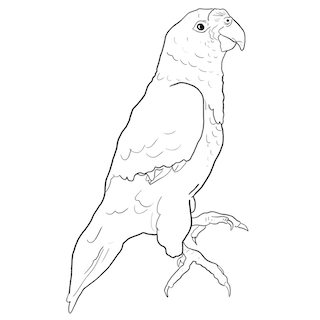' +
            '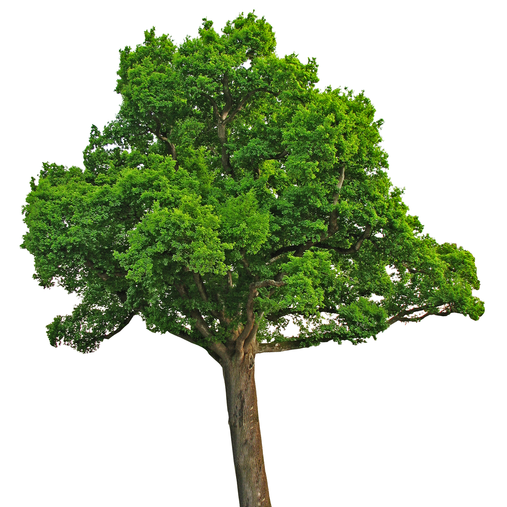' +
            '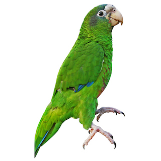' +
            '<div id="speech-bubble-1" class="speech-bubble" style="display: none; position: absolute; bottom: 100%; left: 30%; transform: translateX(-50%); background-color: lightblue; color: black; border: 2px solid black; padding: 10px; border-radius: 10px; font-size: 14px;">You could choose this image because it is a drawing, unlike the other two, which are photographs.</div>' +
            '<div id="speech-bubble-2" class="speech-bubble" style="display: none; position: absolute; bottom: 100%; left: 50%; transform: translateX(-50%); background-color: lightgreen; color: black; border: 2px solid black; padding: 10px; border-radius: 10px; font-size: 14px;">The tree and the bird on the right both share a green color, making them similar. However, since the other two images depict a bird, this could also indicate that the tree is the odd-one-out.</div>' +
            '<div id="speech-bubble-3" class="speech-bubble" style="display: none; position: absolute; bottom: 100%; left: 70%; transform: translateX(-50%); background-color: yellow; color: black; border: 2px solid black; padding: 10px; border-radius: 10px; font-size: 14px;">Whereas the other two images could be considered the odd-one-out, this image likely is not. It is green like the tree and depicts a bird, similar to the one in the drawing.</div>' +
        '</div>'+
        '<p style="color:#778899 ;">Which image is the odd-one-out?</p>',
    ],
    show_clickable_nav: true,
    post_trial_gap: 200,
      min_viewing_time: 3000,
    on_load: function() {
        var interactiveImages = document.querySelectorAll('.interactive-image');
        var speechBubbles = document.querySelectorAll('.speech-bubble');

        interactiveImages.forEach(function(image, index) {
            image.addEventListener('mouseenter', function() {
                speechBubbles[index].style.display = 'block';
            });

            image.addEventListener('mouseleave', function() {
                speechBubbles[index].style.display = 'none';
            });
        });
    }
};

var instructions4 = {
    type: jsPsychInstructions,
    pages: [
        // First page with the first set of interactive images
        '<p>In this third example, it becomes increasingly evident that there are sometimes triplets that are rather ambiguous and where multiple answers appear equally plausible.</p>' +
        '<p>The images shown are for example all blue and show different categories of objects.</p>' +
        '<p>You can again hover over the images for example explanations.</p>' +
        '<div style="margin-bottom: 20px;"></div>' + 
        '<div style="text-align: center; position: relative;">' +
            '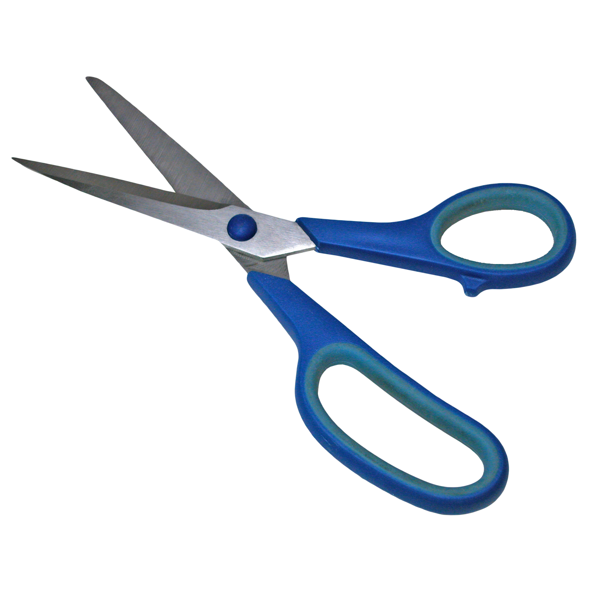' +
            '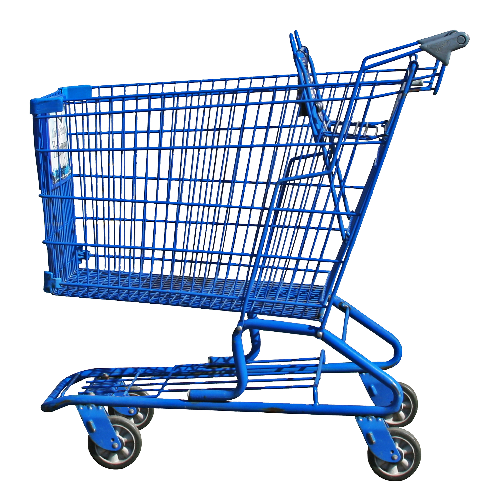' +
            '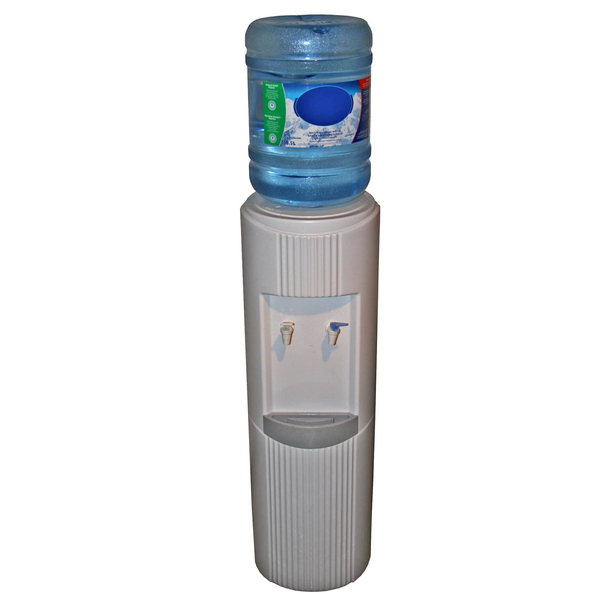' +
            '<div id="speech-bubble-1" class="speech-bubble" style="display: none; position: absolute; bottom: 100%; left: 35%; transform: translateX(-50%); background-color: lightblue; color: black; border: 1px solid black; padding: 10px; border-radius: 10px; font-size: 14px;">You could choose the scissors, as they are the smallest object.</div>' +
            '<div id="speech-bubble-2" class="speech-bubble" style="display: none; position: absolute; bottom: 100%; left: 50%; transform: translateX(-50%); background-color: lightgreen; color: black; border: 1px solid black; padding: 10px; border-radius: 10px; font-size: 14px;">Alternatively, the shopping cart could be selected, considering that it is an item you mostly find in a shopping area (and not at home like the scissors or watercooler).</div>' +
            '<div id="speech-bubble-3" class="speech-bubble" style="display: none; position: absolute; bottom: 100%; left: 65%; transform: translateX(-50%); background-color: yellow; color: black; border: 1px solid black; padding: 10px; border-radius: 10px; font-size: 14px;">Or you might choose the watercooler, as it has rounded edges, while the other objects appear more squared.</div>' +
        '</div>'+
        '<p style="color:#778899 ;">Which image is the odd-one-out?</p>',
    ],
    show_clickable_nav: true,
    post_trial_gap: 200,
      min_viewing_time: 3000,
    on_load: function() {
        var interactiveImages = document.querySelectorAll('.interactive-image');
        var speechBubbles = document.querySelectorAll('.speech-bubble');

        interactiveImages.forEach(function(image, index) {
            image.addEventListener('mouseenter', function() {
                speechBubbles[index].style.display = 'block';
            });

            image.addEventListener('mouseleave', function() {
                speechBubbles[index].style.display = 'none';
            });
        });
    }
};

  // General introductions about time limits, bonus payment, etc.
     var instructions5 = {
     type: jsPsychInstructions,
     pages: [
     '<p>Do you wonder how you can give your answer once you have choosen one object? Very simple,</p>'+
    '<p><strong>You can enter your answer by using the arrow keys on your keyboard.</strong></p>'+
    '<p>Pressing the left arrow key selects the left image as the odd-one-out.<p>'+
    '<p>Pressing the middle arrow key that is pointing downwards selects the middle image.</p>'+
    '<p>Lastly, the right arrow selects the right image as the one that is different from the others.<br><br></p>'+
    '<p>Just keep in mind that this one key press already enters your answer.</p>'+
    '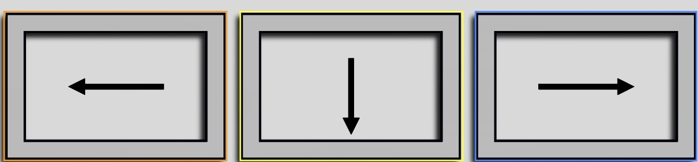', 
    '<p> Always, take the time you need to make your odd-one-out selection.</p>'+
    '<p>For each trial, you will have 15 seconds to respond, which will be probably more than enough for most trials. For your orientation, we included a visual cue that appears towards the end of a single trial at around 10s, to let you know how much time is left.</p>'+
    '<p>If you exeed the 15s time window, a new trial will start.</p>'+
    '<p>We want to encourage you to always take the time you need to make a decision. Please do not worry when you miss to respond in one trial.</p>'+
    '' ,
    '<p>Below you see an overview of your task for today. The trials are always of the same kind (just like explained in the previous slides), and there will of course be time for short breaks.</p>'+
    '<p> We will include triplets with very obvious odd-one-out choices. This helps us to determine if you are engaging in the task and if you pay attention.<br><br><br><br></p>'+
    '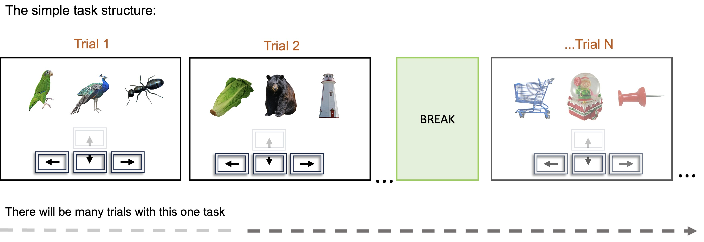' +
    '</div>' +
    '<p>This overview is just to give you an impression, the task will always guide you.</p>',
    '<p>If you focus, pay attention, and make an effort to answer as best as you can, you will receive a bonus payment at the end of the experiment.<br><br></p>'+
    '' ,
    '<p>Are you ready to do a few practice trials?</p>'+
    '<p>If no, feel free to re-read the instructions by clicking on the left arrow button.</p>'+
    '<p>If yes, just try out the task without rush, the practice is for you to get a hang of the task.</p>'+
    '</div>' +
    '<p>If you need to exit the experiment prematurely, you can press the escape key (you will only receive partial payment in this case).</p>',
    '<p><strong>Start practice phase</strong></p>'
    ],
      show_clickable_nav: true,
      post_trial_gap: 200,
      min_viewing_time: 3000,  // Set the minimum viewing time to 5 seconds (in milliseconds)
      };

    var fullscreenEnteredAfterLastCheck = false; // Declare and initialize at the global level
    
    var reenter_fullscreen = {
    type: jsPsychFullscreen,
    fullscreen_mode: true,
    message: '<p style="font-size: x-large; color: grey;"><strong>We have detected that you exited fullscreen</strong></p><br>' + 
             '<br>' +
             '<p>To maximise the quality of the results, we ask you to remain in fullscreen mode for the full duration of the experiment.</p>' +
             '<br>' +
             '<p>To reenter fullscreen mode and <span>continue the task</span>, please click <span style="font-style: italic;">Continue</span>.</p>',
    on_finish: function() {
        // Update the variable to indicate that fullscreen has been re-entered
        fullscreenEnteredAfterLastCheck = true;

        // Optional: Log to the console or perform other actions
        console.log("Fullscreen mode has been re-entered.");
    }
};


var fullscreen_reentry_conditional = {
  timeline: [reenter_fullscreen],
  conditional_function: function() {
    // Ensure fullscreenEnteredAfterLastCheck is declared and initialized outside this function
    var interactionData = jsPsych.data.getInteractionData();
    var fullscreenExited = interactionData.filter({event: 'fullscreenexit'}).count() > 0;
    
    if (fullscreenExited && !fullscreenEnteredAfterLastCheck) {
      jsPsych.data.get().push({
        fullscreen_exit_detected: true,
        timestamp: Date.now(), // Optional timestamp for when the exit was detected
      });

      fullscreenEnteredAfterLastCheck = false;
      return true; // Proceed to trigger the fullscreen re-entry trial
    } else {
      return false; // Do not trigger if fullscreen was not exited or has been re-entered
    }
  }
};

    
    // I am interleaving the exp trials with these break routines that allow for a break of max. 2 minutes approx. every 10 minutes
    var break_trial = {
    type: jsPsychHtmlKeyboardResponse, // or any other plugin that supports trial_duration
    stimulus: '<p><strong>Nicely done!</strong></p>' +
        '<br>' +
        '<p>If you need a break, you can take one now.</p>' +
        '<p>Please allow yourself a maximum of 2 minutes. It is important that you don\'t forget the task rules before you resume the experiment.</p>' +
        '<p>The task will automatically continue after 2 minutes.</p>' +
        '<br>' +
        '<p>Press any <strong>arrow key</strong> [&larr; &darr; &rarr;] to continue when you\'re ready.</p>',
    choices: ['ArrowLeft', 'ArrowDown', 'ArrowRight'],
    trial_duration: 120000, // 2 minutes
    response_ends_trial: true,
    on_finish: function(data) {
        // Determine how the trial ended and store this information in the data object
        if(data.rt === null) {
            data.break_ending = "ended by timeout after 2 minutes";
        } else {
            data.break_ending = "ended by participant's action after " + data.rt + " ms";
        }
        data.exp_trial_type = "break";
        
        // Check for fullscreen exit
        // I am adding a check for fullscreen conditional that prompts participants to reenter fullscreen
        // Log interaction data to the console for debugging
        console.log("Checking for fullscreen exits in interaction data...");
        var interactionData = jsPsych.data.getInteractionData();
        var fullscreenExited = interactionData.filter({event: 'fullscreenexit'}).count() > 0;
        // Set a data property to indicate whether a fullscreen exit was detected
        data.fullscreen_exit_detected = fullscreenExited;
    }
};

    // Split the experiment trials that are fetched for each participant into 6 blocks to create a trial structure that can be interleaved with catch trials and breaks
  var block1_stimuli = input.slice(0, 50); // First block of the task
  var block2_stimuli = input.slice(50, 100); // Second block of the task
  var block3_stimuli = input.slice(100, 150); // Third block of the task
  var block4_stimuli = input.slice(150, 200); // Fourth block of the task
  var block5_stimuli = input.slice(200, 250);// Five
  var block6_stimuli = input.slice(250, 301); // Six
  var block7_stimuli = input.slice(301, 331);// Seven
 
  // I am testinng the catch trials in blocks of 5, to not fail participants that might miss a catch trials by coincidence
  var catch_block1 = catch_trials.slice(0,2);
  var catch_block2 = catch_trials.slice(2,4);
  var catch_block3 = catch_trials.slice(4,6);
  var catch_block4 = catch_trials.slice(6,8);
  var catch_block5 = catch_trials.slice(8,10);
  var catch_block6 = catch_trials.slice(10,12);
  var catch_block7 = catch_trials.slice(12,16);
  


  // I am preparing a conditional procedure to run when no response is made
  var timeout_message = {
  type: jsPsychHtmlButtonResponse,
  stimulus: "<span style='font-size:1vw;'><p>It seems like you're unsure about that one.</p><p>That's okay, try the next one!</p></span>",
  choices: ['Next Trial >'],
  button_html: '<button style="position:fixed; width:7vw; left:calc(50vw - 4vw); bottom:2vw; margin:2vw; font-size:1vw;" class="jspsych-btn">%choice%</button>', // Removed onclick attribute
  data: {
    test_part: 'timeout_message',
  }
};


// Define a conditional timeout procedure
var timeout_conditional = {
  timeline: [timeout_message],
  conditional_function: function () {
    // Check if the response was null for the last trial
    var lastTrialData = jsPsych.data.getLastTrialData().values()[0];
    return lastTrialData.keypress === 'NoResponse';
  }
};

// Adding a routine that tells participants that they successfully finished the practice phase
var end_of_practice = {
        type: jsPsychInstructions,
        pages: [
            '<p style="font-size: x-large; color:#778899;"><strong>Well done!</strong></p><br>'+
            '<p>Now that you\'ve got the hang of the task, you can start the first block of the testing phase.</p>' + 
            '<p>You will have time for a short break every approx. 10 minutes.</p>' + 
            '<p>Remember, you just need the three arrow keys on your keyboard [&larr; &darr; &rarr;] to respond.</p>' +
            '<p></p>' + 
            '<p>Click <strong>Next</strong> to begin.</p>'
        ],
        show_clickable_nav: true,
        post_trial_gap: 1000
};


// Wrapped in a function here is the main trial routine. By calling the function for every new block of trials I can interleave the exp. routine with catch trials and breaks
function createExperimentBlock(timelineVariables,trial_type_info) {
    return {
    timeline: [
        {
            type: jsPsychHtmlKeyboardResponse,
            stimulus: '<p style="font-size: 36px;">+</p>',
            choices: "NO_KEYS",
            trial_duration: 1000
          },
        {
            type: jsPsychHtmlKeyboardResponse,
            stimulus: function () {
                // Define the stimulus HTML
                var html = `
                <div style="text-align: center;">
                  
                  
                  
                </div>
                  <div style="text-align: center; margin-top: 40px;">
                  <svg height="50" width="50" viewbox="0 0 50 50">
                  <circle id="timerCircle" cx="25" cy="25" r="20" stroke="white" stroke-width="4" fill="none" stroke-dasharray="125.6" stroke-dashoffset="125.6"/>
                  </svg>
                </div>`;

        var totalDuration = 15000; // 15 seconds
        var elapsed = 0;
        var interval = 50; // Update every 50 milliseconds

        function updateCircle() {
          var circle = document.getElementById('timerCircle');
              if (circle) {
                var progress = elapsed / totalDuration;
                var offset = 125.6 * (1 - progress);
                circle.setAttribute('stroke-dashoffset', offset);

                // Change color from green to red
                var color = progress < 0.6 ? 'white' : progress < 0.75 ? 'orange' : progress < 0.8 ? 'red' : 'brown';
                circle.setAttribute('stroke', color);
            if (elapsed < totalDuration) {
            elapsed += interval;
            setTimeout(updateCircle, interval);
         }
       }
    }
        // Initial call to start the timer
        setTimeout(updateCircle, interval);

    return html;
  },
            choices: ['ArrowLeft', 'ArrowDown', 'ArrowRight'],
            prompt: `
                      <p style="color: #778899;">Which image is the odd-one-out?</p>
                      <div style="font-size: 20px; display: inline-block; background: #DDD; border: 1px solid #CCC; padding: 5px; margin-right: 5px;">&larr;</div>
                      <div style="font-size: 20px; display: inline-block; background: #DDD; border: 1px solid #CCC; padding: 5px; margin-right: 5px;">&darr;</div>
                      <div style="font-size: 20px; display: inline-block; background: #DDD; border: 1px solid #CCC; padding: 5px;">&rarr;</div>
                      `,

            response_ends_trial: true,
            trial_duration: 15000,
            data: {
            image1Path: jsPsych.timelineVariable('image1'),
            image2Path: jsPsych.timelineVariable('image2'),
            image3Path: jsPsych.timelineVariable('image3'),
            exp_trial_type: trial_type_info,
            triplet_class : jsPsych.timelineVariable('triplet_class'),
            exp_trial_number : jsPsych.timelineVariable('trial')
            },
            on_finish: function (data) {
            
            var image1Path = jsPsych.timelineVariable('image1', true);
            var image2Path = jsPsych.timelineVariable('image2', true);
            var image3Path = jsPsych.timelineVariable('image3', true);

            // Conditionally check for the correct response
            var correct_response = jsPsych.timelineVariable('correct_response', true);
            if (correct_response !== undefined) {
            // Use 'catch_trial_correct' to store whether the response matches the correct response
                data.catch_trial_correct = jsPsych.pluginAPI.compareKeys(data.response, correct_response);
            } else {
            data.catch_trial_correct = null; // if there is no catch trial, then this is null
            }
              
            var selected_image = ""; // Initialize as empty string to handle cases where no response is recorded
            if (data.response !== null) {
              if (jsPsych.pluginAPI.compareKeys(data.response, 'ArrowLeft')) {
                
                data.keypress = 'ArrowLeft';
                selected_image = data.image1Path; // Store selected image path
              } else if (jsPsych.pluginAPI.compareKeys(data.response, 'ArrowRight')) {
                
                data.keypress = 'ArrowRight';
                selected_image = data.image3Path; // Store selected image path
              } else if (jsPsych.pluginAPI.compareKeys(data.response, 'ArrowDown')) {
                
                data.keypress = 'ArrowDown';
                selected_image = data.image2Path; // Store selected image path
              }
            } else {
              data.keypress = 'NoResponse';
              selected_image = "No image selected"; // Default message for no response
        }

        // Save the selected image path in the data for later use
        data.selected_image = selected_image;

        
}
        },
        {
      timeline: [timeout_conditional], // Place it inside another timeline
      conditional_function: function () {
        // Check if the response was null for the last trial
        var lastTrialData = jsPsych.data.getLastTrialData().values()[0];
        return lastTrialData.keypress === 'NoResponse';
      }
    },
    {
    type: jsPsychHtmlKeyboardResponse,
    trial_duration: 400,
    stimulus: function (data) {
        // The feedback stimulus is a dynamic parameter because we can't know in advance which image is selected by the participant
        // Instead, this function will check for the keypress of the last response and use that information to set
        // the stimulus value on each trial and give feedback about the selected image
        var last_trial_keypress = jsPsych.data.get().last(1).values()[0].keypress;
         if (last_trial_keypress === "ArrowLeft") {
                       // I am including placeholder.JPEG images here to preserve the proportions of the image presentation in this feedback routine
                       // I had issues with the images being in different places if I don't recreate the exact routine from the triplet presentation before.
                      return `
                    <div style="text-align: center;">
                      
                      
                      
                    </div>`;
                  } else if (last_trial_keypress === "ArrowRight") {
                      return `
                    <div style="text-align: center;">
                      
                      
                      
                    </div>`;
                  } else if (last_trial_keypress === "ArrowDown") {
                      return `
                    <div style="text-align: center;">
                      
                      
                      
                    </div>`;
        }
    }
}
],
    timeline_variables: timelineVariables,
    // by setting randomization to false I am ensuring that the predefined trial structure is executed exactly like it should be in each participant
    randomize_order: false
};
}

    // Here I am defining the training trials 
    var training_trial = "training_trial";
    var training        = createExperimentBlock(training_trials, training_trial);

    // Here I am creating my experiment blocks that are interleaved with the catch trials abd breaks
    var exp_trial = "exp_trial";
    var main_exp_block1 = createExperimentBlock(block1_stimuli,exp_trial);
    var main_exp_block2 = createExperimentBlock(block2_stimuli,exp_trial);
    var main_exp_block3 = createExperimentBlock(block3_stimuli,exp_trial);
    var main_exp_block4 = createExperimentBlock(block4_stimuli,exp_trial);
    var main_exp_block5 = createExperimentBlock(block5_stimuli,exp_trial);
    var main_exp_block6 = createExperimentBlock(block6_stimuli,exp_trial);
    var main_exp_block7 = createExperimentBlock(block7_stimuli,exp_trial);

    // Here I am defining the catch trials which need to look like the "real" experiment trials
    var catch_trial = "catch_trial";
    var catch_trials_block1 = createExperimentBlock(catch_block1,catch_trial);
    var catch_trials_block2 = createExperimentBlock(catch_block2,catch_trial);
    var catch_trials_block3 = createExperimentBlock(catch_block3,catch_trial);
    var catch_trials_block4 = createExperimentBlock(catch_block4,catch_trial);
    var catch_trials_block5 = createExperimentBlock(catch_block5,catch_trial);
    var catch_trials_block6 = createExperimentBlock(catch_block6,catch_trial);
    var catch_trials_block7 = createExperimentBlock(catch_block7,catch_trial);

 // Giving information that participant managed to go through all exp. trials
  var end_exp_trials = {
      type: jsPsychInstructions,
      pages: [
      // informing participants that the main exp. part is over
      '<p>Great, you have almost reached the end of the experiment. There won\'t be any more experiment trials.</p>'+
      '<p>We just have one last question that we would like to ask you.</p>' + 
      '<p>Click on the next button to tell us about the strategy you used to select the odd-one-out, and finish up your participation.</p>'],
        show_clickable_nav: true,
        post_trial_gap: 1000
  };

  
  // Expecially during piloting we want to know if participants felt encouraged to use a specific strategy to select the odd-one-out
  // So, I am giving them the opportunity to tell me in case they did use a specific strategy
  var feedback_strategy = {
    type: jsPsychSurveyText,
    questions: [
    {prompt: '<p style="font-size:20px;">Which strategy did you use to choose the odd-one-out? Please type in an answer to this question in the field below.</p>'}
  ]
  }
// global end of experiment. This routine mostly manages the data saving and redirection to prolific
  var end_experiment = {
    type: jsPsychInstructions,
    pages: [
      // Thanking the participants and inform them that they will be redirected to Prolific shortly
        '<p><strong>End Of Experiment</strong></p>' + 
        '<br>' + 
        '<p>Thank you for participating!</p>' +
        '<p>You will shortly be redirected to Prolific to confirm the experiment has been completed (necessary for getting paid!).</p>' + 
        '<p>Please don\'t close this tab until you\'ve been redirected, thanks!</p>'
    ],
    show_clickable_nav: false,
    allow_keys: false,
    post_trial_gap: 1000,
    on_start: async function(trial) {
        // Mark the experiment as complete
        jsPsych.data.addProperties({ experiment_complete: true });
        // Add end time to the dataset
        var endTime = (new Date()).toISOString().replace(/z|t/gi,' ').trim();
        jsPsych.data.addProperties({ end_time: endTime });
        
        // Merge interaction data with main experiment data. I am adding the interaction data about leaving fullscreen, etc. to the last trial
        var interaction_data = jsPsych.data.getInteractionData();
        jsPsych.data.get().addToLast({interaction_data: interaction_data.json()});

        await saveData(jsPsych.data.get().values());
        // This gives participants the chance to read the end screen before they get redirected.
        await redirectAfterDelay(4000, "https://app.prolific.com/submissions/complete?cc=CPBP56NU");
        // End the experiment - trigger the on_finish function in init jsPsych
        jsPsych.endExperiment();
    },
  };

    var preparation_block = {
        timeline:[consent,enter_fullscreen,demographics, preload,instructions2,instructions3,instructions4,instructions5].flat()
    }
    // Here I am defining the trial structure of the exp. After practice (6 trials), I am creating blocks of 50 exp. trials that are interleaved with catch trials and breaks
    var block1 = {
        timeline:[training,fullscreen_reentry_conditional,end_of_practice,main_exp_block1,catch_trials_block1,fullscreen_reentry_conditional,break_trial,main_exp_block2,fullscreen_reentry_conditional,catch_trials_block2,fullscreen_reentry_conditional,main_exp_block3,break_trial,fullscreen_reentry_conditional,catch_trials_block3,main_exp_block4,fullscreen_reentry_conditional,catch_trials_block4,break_trial,fullscreen_reentry_conditional,catch_trials_block5,main_exp_block5,fullscreen_reentry_conditional,catch_trials_block6, main_exp_block6,fullscreen_reentry_conditional,catch_trials_block7,main_exp_block7].flat()
    }
    var block2 = {
        timeline:[end_exp_trials,feedback_strategy,end_experiment].flat()
    }

    timeline.push(preparation_block,block1,block2)

    
    jsPsych.run(timeline)

    

  } 
  main();

  </script>
</html>


